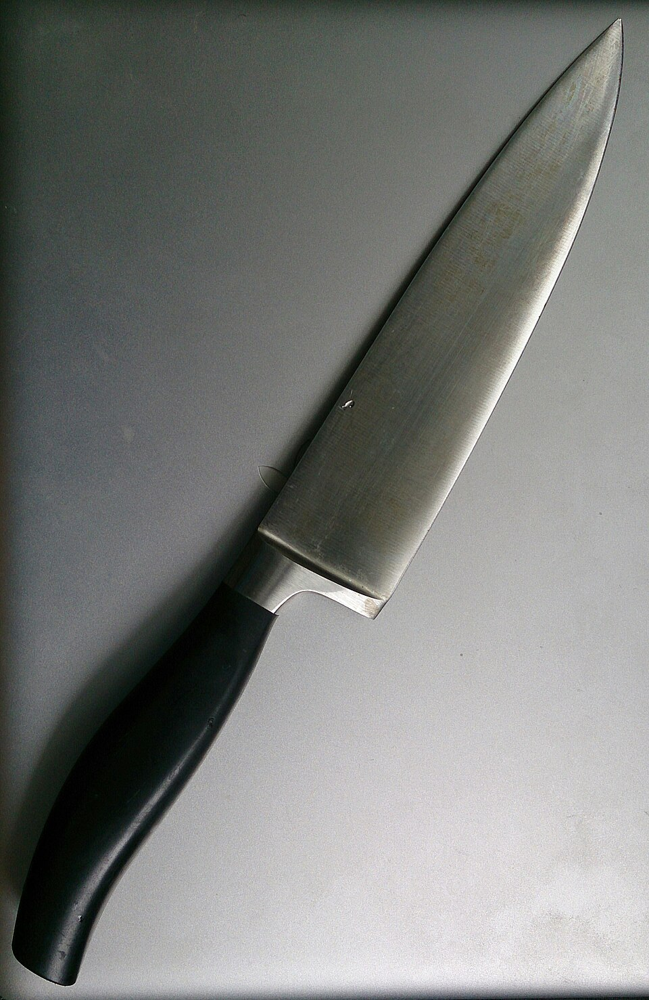
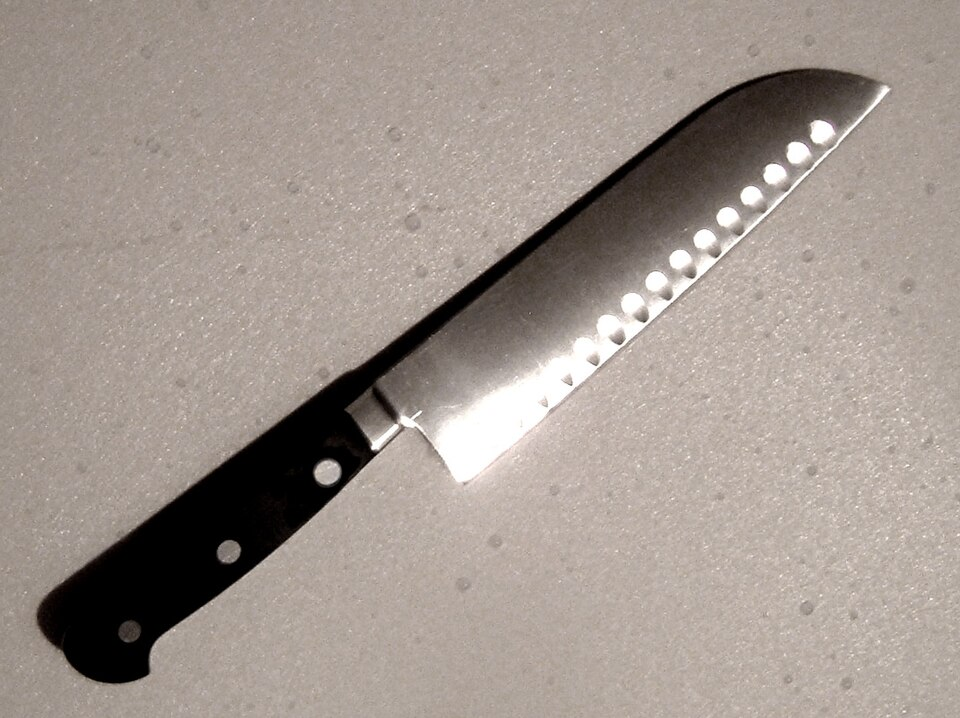
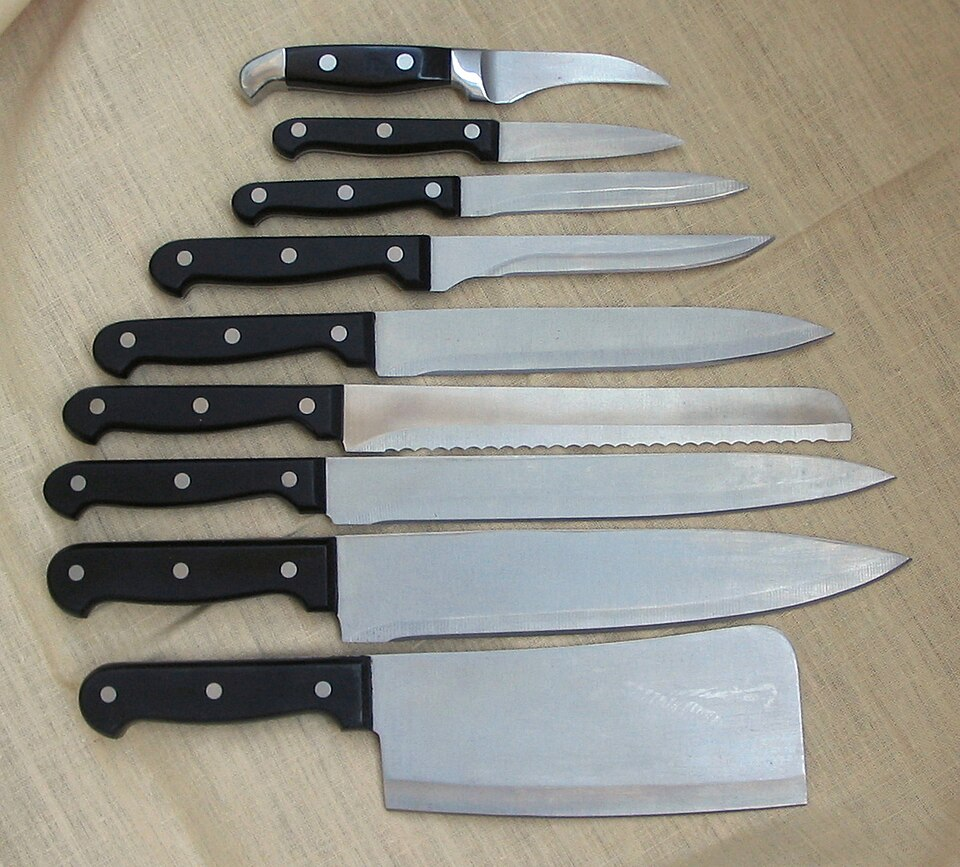
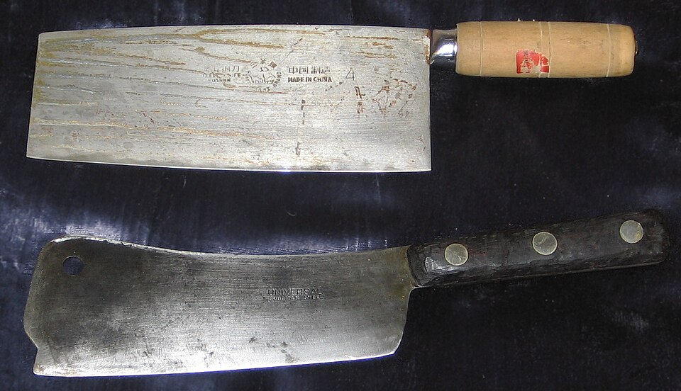
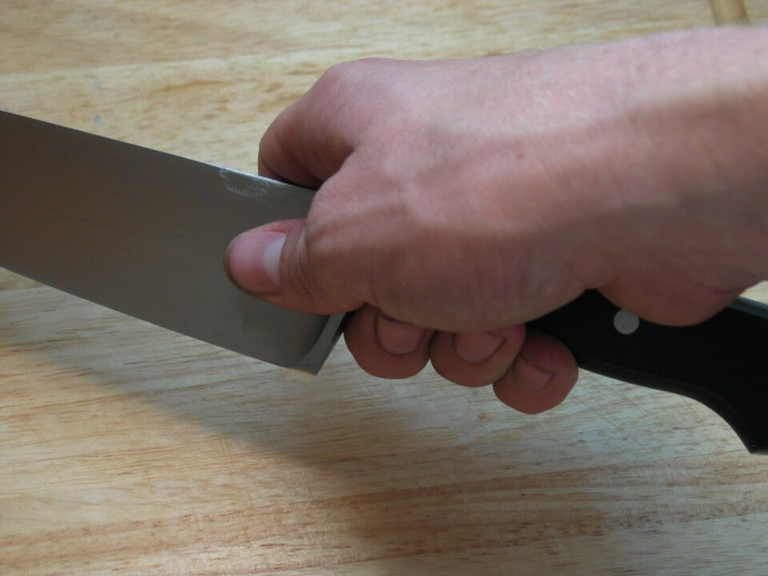
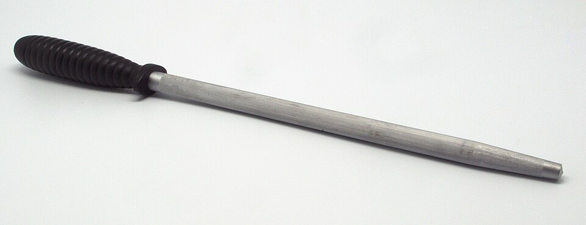
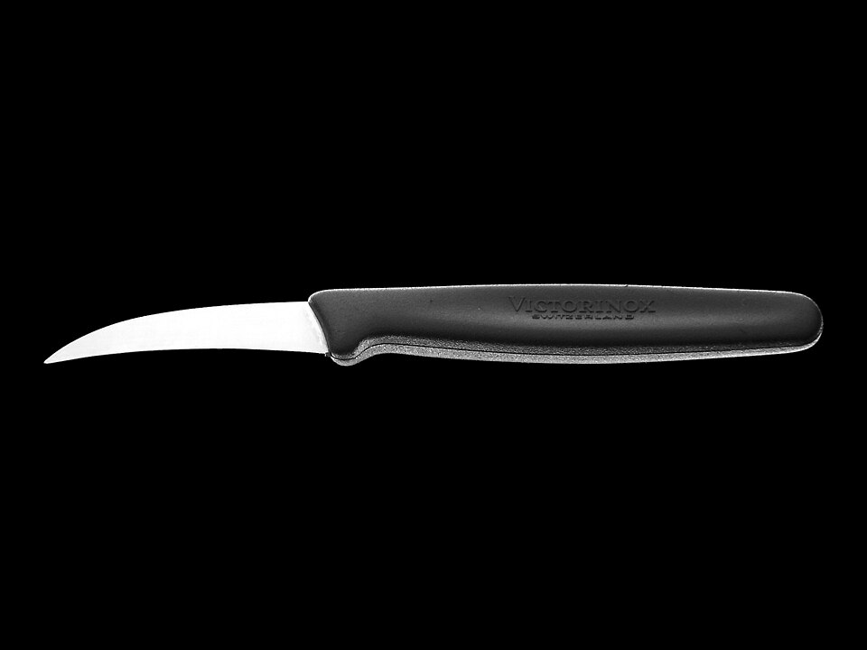
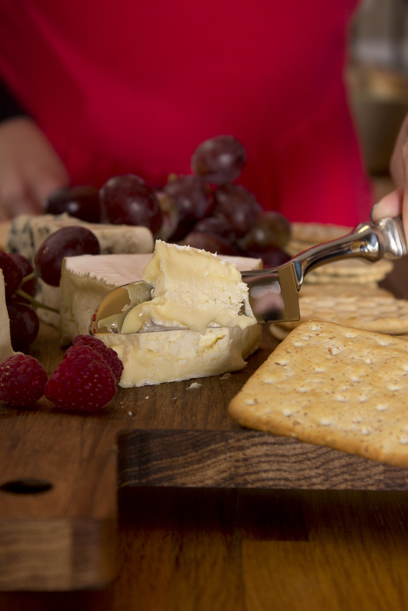

Knife Types
Chef's Knife (8–10")
The workhorse of the kitchen — handles 90% of kitchen tasks. Wide, curved blade allows a rocking motion. The German style curves from tip to heel; French style is straighter. Use for: chopping vegetables, mincing herbs, slicing meat, dicing onions. The first knife anyone should buy.
Paring Knife (3–4")
Small, nimble blade for intricate work. Peeling fruit, deveining shrimp, hulling strawberries, scoring meat, segmenting citrus. Held in-hand (not on board) for many tasks. Two types: bird's beak (curved for turning/peeling) and standard straight. Essential second knife after the chef's knife.
Bread Knife (8–10", serrated)
Serrated edge grips and saws through hard crusts without crushing soft interiors. Never needs sharpening (and is nearly impossible to sharpen at home). Also excellent for: slicing tomatoes, cakes, melon. The teeth do the work — apply light forward pressure rather than pressing down. A overlooked multi-purpose knife.
Boning Knife (5–6.5")
Flexible blade curves around bones to separate meat cleanly. Narrow profile slides between bones and joints. Stiff version for beef and pork; flexible version for fish and poultry. The flex allows the blade to follow bone contours. Essential for breaking down whole chickens, lamb racks, and pork loins.
Filleting Knife (6–9")
Very thin, very flexible blade designed to glide along fish bones with minimal waste. More flexible than a boning knife. The flex allows the blade to lay flat along the fish skeleton. Right-handed vs left-handed versions exist. Running the blade from tail to head against the backbone yields clean fillets.
Santoku (5–7")
Japanese all-purpose knife. "San" = three virtues: meat, fish, vegetables. Shorter and lighter than a chef's knife; flatter blade profile means more push-cut than rock-cut. Hollow-ground dimples (Granton edge) reduce friction and sticking. Excellent for thin slicing. Growing in popularity in Western kitchens.
Nakiri (5–7")
Japanese vegetable knife with a flat, rectangular blade. The completely flat edge and straight tip make it perfect for chopping vegetables in a guillotine-like up-and-down motion. No tip work; no rocking. Thin, double-bevel blade. The usuba is the single-bevel professional version. Superb for cabbage, leeks, and daikon.
Yanagiba / Sashimi (10–13")
Single-bevel, long, thin Japanese knife for slicing raw fish. The single bevel creates an asymmetric edge that produces paper-thin slices with a single drawing stroke (hikizukuri). The hollow back face reduces suction, allowing slices to fall away cleanly. Never used for any other task. Mastery requires years of practice.
Cleaver (6–9")
Heavy, rectangular blade for chopping through bone and hard vegetables. Chinese chef's cleaver is thinner and used for all-purpose tasks (not bone chopping). Western-style heavy cleaver splits through chicken bones and lobster. Never use a thin vegetable cleaver on bone — it can chip. The flat of the blade is used to crush garlic.
Classic Knife Cuts
Julienne (1/8" × 1/8" × 2–3")
Thin matchstick cuts. Square the vegetable first (cut flat sides), then slice into planks, stack planks, and cut into thin strips. Used for stir-fries, salads, and garnishes. The fine julienne (1/16") is used in haute cuisine as a delicate garnish. Also called "allumette" (matchstick).
Brunoise (1/8" × 1/8" × 1/8")
Tiny perfect cubes made by cross-cutting julienne strips. The finest standard dice — one of the hardest cuts to master consistently. Used as a garnish or aromatic base where you want flavor without visible texture. Fine brunoise is 1/16" cube — exceptional knife control required. Common in classic French cuisine.
Dice — Small / Medium / Large
Small dice: 1/4" cubes. Medium dice: 1/2" cubes. Large dice: 3/4" cubes. Created by: cutting planks to the desired thickness, cutting planks into batonnet strips of the same width, then cross-cutting into cubes. Uniform size is critical for even cooking — inconsistent dice means some pieces overcook while others remain raw.
Chiffonade
Thin ribbons of leafy herbs or greens. Stack leaves (basil, mint, sorrel), roll into a tight cylinder, then slice thinly. Width can range from 1/8" (standard) to paper-thin. Toss immediately in oil or acid to prevent oxidation on basil. Used as a garnish, salad element, or for pasta and soups.
Mince
Very fine, irregular cuts. Garlic is the most common application: smash with the flat of the blade first, rough chop, then rock the blade tip on the board in a fan motion. For herbs: use a mezzaluna or rock the chef's knife over a pile repeatedly. No precision needed — just small. Maximizes surface area for flavor release.
Batonnet (1/4" × 1/4" × 2.5")
The building block for medium dice. Square the vegetable, cut into 1/4" planks, then cut planks into 1/4" sticks. The parent cut for French fries (pommes frites). From batonnet, cross-cut to create medium dice. Larger than julienne, smaller than bâton (1/2" sticks used for crudités).
Tournée (7-sided football)
A classical French cut producing a 7-sided, 2" barrel with tapered ends. Used for potatoes, turnips, and carrots for presentation in fine dining. Requires a bird's beak paring knife and practice. The trimmed-off pieces (called parures) are saved for stocks and soups — nothing wasted in a professional kitchen.
Oblique / Roll Cut
Used for cylindrical vegetables (carrots, zucchini, parsnips). Cut at a 45° angle, roll the vegetable 90°, cut again at 45°. Produces irregular, angular pieces with two angled faces — maximum surface area for browning and sauce adherence. Faster and less wasteful than tournée while still achieving elegant presentation.
Bias / Diagonal Cut
Cutting at a 45° angle to the length of the ingredient. Increases surface area compared to a straight cross-cut. Common in Asian cooking — scallions, bok choy stems, asparagus. The larger cut face allows more caramelization in a stir-fry. Also purely aesthetic for elegant plating of proteins and vegetables.
Steel Types
High-Carbon Stainless (Most Common)
The industry standard for home and professional knives. Balances edge retention, stain resistance, and ease of sharpening. Contains 0.5–1.0% carbon and chromium (10%+) for corrosion resistance. Examples: VG-10 (Shun), AUS-8, 440C. Excellent all-around performance. Will stain if neglected but won't rust aggressively.
Carbon Steel (Reactive)
High carbon (1.0–1.5%), no chromium. Takes the sharpest possible edge and is easy to sharpen — hyperacute geometry. The trade-off: it reacts with acids and water, patinating and eventually rusting if neglected. Develops a dark, protective patina with use. Preferred by professionals who enjoy maintenance. Examples: Blue Steel #1/#2, White Steel (Shirogami), 1095.
German Steel (X50CrMoV15)
The dominant steel in European-style knives (Wüsthof, Henckels). 0.5% carbon, 15% chromium — very stain resistant, tough, and forgiving. Hardness: 56–58 HRC. Designed to be sharpened frequently on a honing rod. Thick, durable spine handles abuse. The go-to for culinary schools and professional kitchens where knives take punishment.
Japanese Steel (Harder)
Japanese steels are hardened to 60–67 HRC vs European 56–58 HRC. Harder steel = finer edge geometry and better edge retention. The trade-off: harder steel is more brittle and chips rather than rolls when abused. Japanese knives demand careful use — no prying, no lateral torque, no bones. Sharpen on whetstones, not pull-through sharpeners.
Damascus (Pattern Welded)
Multiple layers of different steels welded and folded, then acid-etched to reveal contrasting patterns. Modern "Damascus" is typically a high-carbon core (the cutting edge) clad with softer stainless layers for protection. The pattern is purely aesthetic — the performance comes from the core steel. Genuine wootz Damascus is a separate historical material.
Powdered Metallurgy Steels
ZDP-189 (67–69 HRC), SG2/R2, HAP40 — extreme performance steels made by sintering powdered alloys. Allows very high carbon and carbide content without the brittleness of traditional high-carbon steel. ZDP-189 holds an edge for months of daily use. Difficult to sharpen once dulled. Reserved for high-end knives ($300+). The pinnacle of modern knife steel metallurgy.
Sharpening
Whetstone Basics
The gold standard for sharpening. Stones are graded by grit: 220–400 (heavy repair, removing chips), 1000 (primary sharpening, establishing edge), 2000–3000 (refining), 6000–8000 (polishing/finishing). Work progression: if the knife is very dull, start at 400. Maintenance sharpening: 1000, then 3000–6000. Japanese knives: finish at 6000–8000 for a mirror polish.
Sharpening Angle
German/European knives: 15–20° per side (some manufacturers recommend 20°). Japanese knives: 10–15° per side (some single-bevel knives: 0° on flat side, full angle on bevel side). Consistent angle maintenance is more important than the exact degree. A lower angle = sharper but more fragile. Higher angle = more durable but less acute. Use an angle guide until muscle memory develops.
Honing Rod (Honing Steel)
Does NOT sharpen — it realigns the edge. During use, the thin edge rolls over microscopically. A honing rod straightens (hones) it back. Use before or after every cooking session. Smooth steel rod for hard Japanese knives; ridged/grooved rod for German knives. Ceramic rods provide light abrasion. Diamond-coated rods do sharpen slightly. Never use a grooved rod on a Japanese knife.
Pull-Through Sharpeners
Convenient but destructive. Remove excessive metal, create an inconsistent angle, and leave a rough, toothy edge. Never use on Japanese knives — will chip brittle steel. On German knives, acceptable for occasional quick touch-up. The manual pull-through (Chef'sChoice, KitchenIQ) is less damaging than electric. Electric models remove the most metal. Get a whetstone instead.
Stropping
The final step after whetstone sharpening — like a barber stropping a straight razor. A leather strop (plain or loaded with chromium oxide paste) refines the edge to a mirror finish, removing the microscopic wire edge (burr) left by the whetstone. Draw the knife away from the edge ("spine-leading"). Maintains a polished edge between sharpenings. Essential for single-bevel Japanese blades.
Burr Test
A burr (wire edge) forms on the side opposite where you're sharpening — confirming metal removal and edge formation. Feel for it by lightly dragging your fingertip across the edge (not along it). A subtle catch means the burr is present. Alternate sides until burr forms on both sides, then progress to higher grit to remove the burr. The paper test: the sharpened knife should slice paper cleanly.
Knife Care
Hand Wash Only
Dishwashers are a knife's worst enemy. Harsh detergents erode handles and damage edge geometry. The high-pressure water jet moves knives around, chipping edges against other utensils. Heat from drying cycles can loosen handle rivets. Always hand-wash with mild dish soap immediately after use. Dry immediately — don't let water sit on carbon steel blades even for minutes.
Dry Immediately
Water causes oxidation, especially on carbon steel and at the bolster/handle junction where water collects. Dry with a clean towel immediately after washing. Carbon steel knives: apply a thin coat of food-safe mineral oil or camellia oil after drying if storing for extended periods. Stainless steel is more forgiving but still benefits from prompt drying.
Cutting Board Material
Wood (end grain or edge grain): best for edges — the fibers part and close. End grain boards are the most gentle. Edge grain is good. Plastic (HDPE or polypropylene): acceptable, easy to sanitize, but harder than wood and dulls edges faster. Gets deep grooves that harbor bacteria. Bamboo: very hard, dulls edges quickly — avoid. Glass/ceramic/stone: the worst — instantly destroys edges. Never cut on a plate.
Storage Options
Magnetic strip (best): displays knives accessibly, protects edges, no contact. Mount at an angle so the spine hits first, not the edge. Knife block (good): protects edges, but horizontal slots accumulate debris and can abrade edges. In-drawer with blade guards: safe if guards are used consistently. Never loose in a drawer — blades contact other utensils and dull rapidly. Blade roll for transport.
What to Avoid
Never: use a knife as a screwdriver or can-opener (obvious but happens), pry with the tip, use a glass or ceramic cutting surface, store in a block with other metal utensils touching, scrape the blade edge-down across a cutting board (use the spine to scrape), twist the knife when it's stuck in food. The tip and edge are the most vulnerable parts — protect them.
Maintaining Carbon Steel
Carbon steel knives develop a patina — a dark, mottled oxide layer that paradoxically protects the steel from further oxidation and prevents reactive flavors from transferring to food. Accelerate patina: slice an onion or potato and leave juice on blade for 30 minutes. The patina takes 2–4 weeks of regular use to fully form. Never use on raw fish before patina develops — it will smell.
Japanese vs German
| Attribute | Japanese | German |
|---|---|---|
| Steel Hardness | 60–67 HRC | 56–58 HRC |
| Edge Angle | 10–15° per side | 15–20° per side |
| Blade Profile | Thin, flat-ground, laser-like | Thicker spine, full bolster, curved |
| Weight | Light to medium | Heavier, more heft |
| Balance | Blade-heavy | Handle-heavy or neutral |
| Edge Retention | Excellent (holds longer) | Good (dulls faster) |
| Brittleness | More brittle — chips on bone | More flexible — rolls rather than chips |
| Sharpening | Whetstone only; 10–15° angle | Honing rod + whetstone; 15–20° |
| Best For | Precision vegetable work, fish, delicate slicing | Heavy-duty tasks, bones, rough chopping |
| Handle Style | Wa handle (octagonal, D-shape, slim) | Full tang, bolster, riveted handle |
| Entry-level | Tojiro DP ($50–80), Mac Mighty | Victorinox Fibrox ($40), Wüsthof Gourmet |
| High-end | Yoshihiro, Konosuke, Takamura | Wüsthof Classic, Henckels Pro S |
The Case for Japanese
Japanese knives reward skilled users. The harder steel allows a thinner, more acute edge geometry — the blade glides through food with less resistance. Excellent for fine vegetable prep, fish filleting, and precision work. Lighter weight reduces fatigue during extended prep sessions. The beauty and craft of hand-forged Japanese knives appeals to collectors.
Best choice if: you enjoy knife maintenance, do precise prep work, avoid bones and twisting, and want to invest in quality tools.
The Case for German
German knives are workhorses — built for all-day, all-task kitchen use. The softer steel flexes rather than chips under stress. A honing rod every few sessions keeps them performing. Full bolster adds finger protection and enables a pinch grip. Handle weight provides momentum through tough tasks. Tolerant of less-than-perfect sharpening angles.
Best choice if: you want low-maintenance tools, cook a wide variety of proteins including whole birds, and prefer a heavier, more substantial feel in hand.
Gallery








